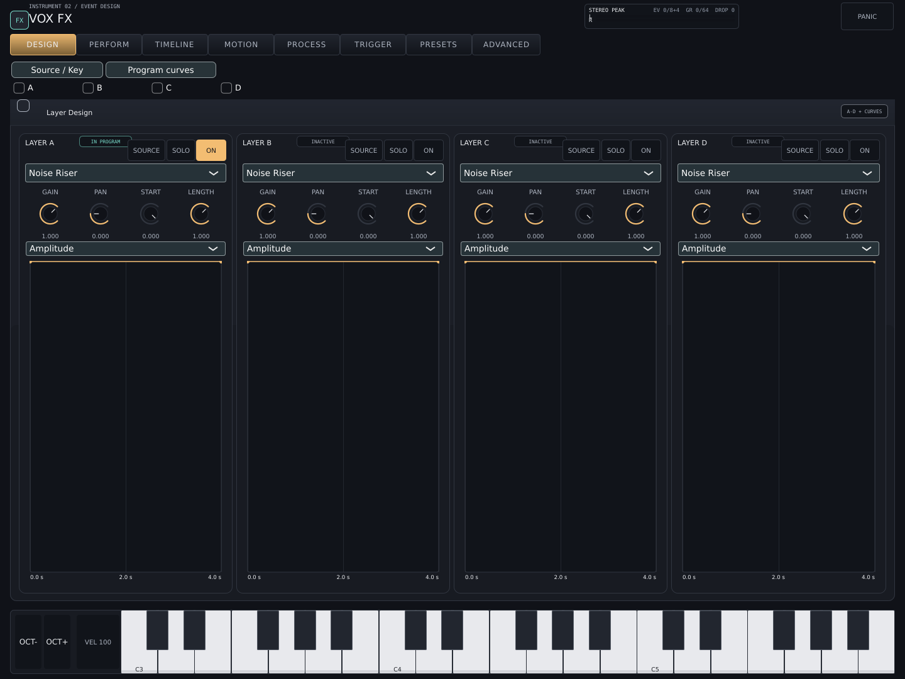

Left: live reference prototype (PR #160 @ e420d2c0 composition, deployed Pages) — use its zone tabs to match the workspace. Right: native JUCE editor render (commit 3196611, fx_ui_render_harness, dpi 1.00). Reference: FX_VISUAL_REFERENCE_20261127.md.
